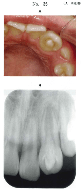

形態異常と好発歯種の組み合わせが頻出。特に上顎側切歯に好発する異常（歯内歯、盲孔、矮小歯）と、臼歯に好発する異常（中心結節、カラベリー結節、タウロドント）を区別する。
上顎側切歯は形態異常の好発部位として重要。
| 形態異常 | 特徴 |
|---|---|
| 歯内歯 | 盲孔などの陥入が歯髄腔内部にまで及ぶ。齲蝕の好発部位。 |
| 盲孔 | 舌面窩の最深部に小孔を形成。齲蝕の好発部位。 |
| 矮小歯 | 全体が著しく小さい歯。円錐歯・円筒歯ともいう。 |
| 斜切痕（舌面歯頸溝） | 舌面歯頸隆線にみられる切痕。歯根に及ぶ場合、歯周病の原因となる。 |
| 形態異常 | 好発部位 | 特徴 |
|---|---|---|
| 中心結節 | 下顎第二小臼歯 | 咬合面にみられる小結節。歯髄の進入があり、破折で露髄のリスク。 |
| カラベリー結節 | 上顎大臼歯 上顎第二乳臼歯 |
近心舌面の過剰結節。第5咬頭ともいう。 |
| プロトスタイリッド | 下顎大臼歯 | 近心頬面に出現する結節。原錐茎状突起ともいう。 |
| 介在結節 | 上顎第一小臼歯 | 咬合面における近心辺縁隆線上の小結節。 |
| 形態異常 | 好発部位 | 特徴 |
|---|---|---|
| 臼歯結節 | 乳臼歯 | 歯冠近心頬面の歯頸部付近の結節。 |
| タウロドント（台状根） | 下顎乳臼歯 | 歯根が癒合し歯冠部歯髄が延長した形態。下顎第二乳臼歯で頻度が高い。 |
| 遠心トリゴニード隆線 | 下顎第一乳臼歯 | 近心頬側三角隆線と近心舌側三角隆線が連なったもの。 |
| 形態異常 | 好発部位 | 特徴 |
|---|---|---|
| 切縁結節 | 切歯 | 萌出直後の切歯の切縁に3つの突出がみられる。 |
| 切歯結節 | 上顎切歯 | 基底結節の異常な発育。犬歯にみられる場合は犬歯結節という。 |
| シャベル切歯 | 上顎中・側切歯 | 舌面窩が深くくぼんだもの。 |
歯の異常と発現しやすい歯種の組合せで正しいのはどれか。2つ選べ。
【解説】a: 歯内歯は上顎側切歯に好発 ✓。b: 切歯結節は上顎切歯に好発（下顎ではない）。c: 中心結節は下顎第二小臼歯に好発。d: タウロドントは下顎乳臼歯に好発 ✓。e: プロトスタイリッドは下顎大臼歯に好発（上顎ではない）。
歯の形態異常の精査を希望して来院した患者の口腔内写真とエックス線画像を別に示す。考えられるのはどれか。1つ選べ。

【解説】エックス線画像で歯冠内部に陥入構造が認められ、歯内歯と診断される。歯内歯は上顎側切歯に好発し、盲孔などの陥入が歯髄腔内部にまで及ぶ形態異常である。齲蝕の好発部位となるため注意が必要。